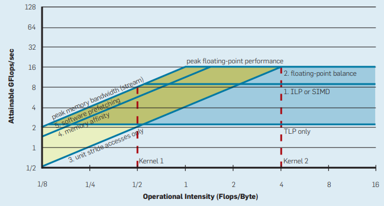

Back to Home
Roofline plot

References
1. Samuel Williams, Andrew Waterman, and David A. Patterson. 2009. Roofline: An insightful visual perfor- mance model for multicore architectures.
https://dl.acm.org/doi/pdf/10.1145/1498765.1498785
Back to Home